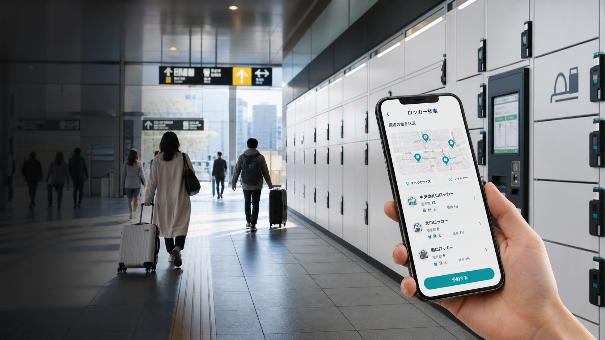

予約・決済手数料
満空確認から事前決済へ。1予約あたり固定手数料とピーク時の動的価格で粗利を積み上げます。
月間 ¥482,000
Shizuoka Station Pilot Concept
Google検索で終わる「場所案内」から、リアルタイム空き状況、事前決済、観光導線、 店舗クーポン、事業者ダッシュボードまでを一体化する収益型ロッカーOSです。
User App
Monetization
満空確認から事前決済へ。1予約あたり固定手数料とピーク時の動的価格で粗利を積み上げます。
月間 ¥482,000荷物を預けた直後の観光・飲食ニーズに、近隣店舗の成果報酬クーポンを提示します。
CVR 18.6%検索地点、サイズ、滞在予定時間に応じてホテル、土産店、交通サービスの広告を出し分けます。
RPM ¥1,240観光アプリ、ホテル、MaaS事業者にロッカー在庫と予約導線を提供し、API利用料を得ます。
SaaS ¥29,800/月Operator Console